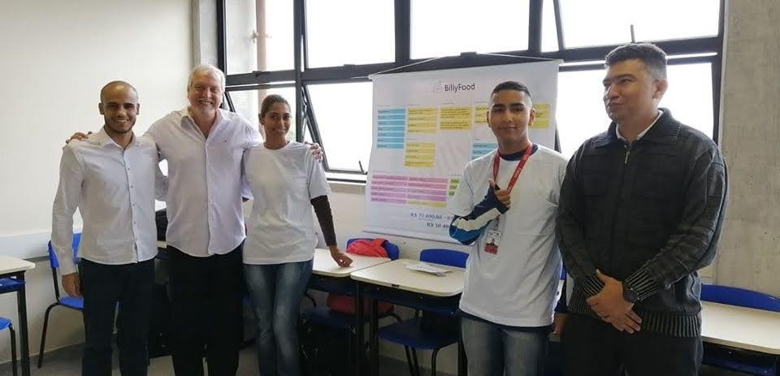
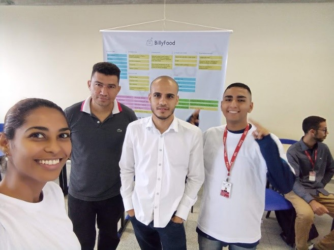
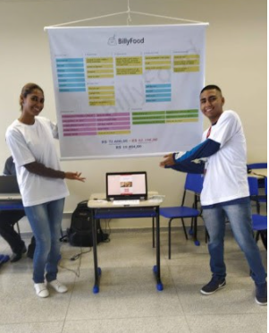

Billyfood app
Nossa História
O Projeto BillyFood surgiu durantes as disciplinas de Empreendedorismo e Projeto Integrador I do curso de Análise e Desenvolvimento de Sistemas na Fatec Ferraz de Vasconcelos, com o intuito de criarmos um aplicativo inovador e funcional.
O Diego Lins foi o precursor dessa ideia, por observar muitos cães andantes sem alimentos em situação de rua, ele humildemente compartilhou a ideia com os demais integrantes do grupo e abraçamos o projeto.
Com parceria entre as prefeituras e Petshops estabelecemos pontos de alimentação através do aplicativo, mapeamento com a localização de pontos pré-estabelecidos. Usufruindo sensores nos pontos que tem como objetivo de controlar o volume de comida, e além disso para evitar possíveis ações criminosas adaptar travas de segurança.
Vimos que no decorrer do discurso podíamos aprimorar as habilidades adquiridas com outras disciplinas
para melhorar nosso projeto, já que a causa é nobre e de interesse público e sanitário.
O intuito do Billy Food é minimizar a fome dos cães em situação de rua, mapear e controlar através
do aplicativo os pontos de alimentação, e assim permitir que as pessoas interessadas com a causa
animal, possam interagir e ajudar reabastecendo pontos de alimentação pelas cidades.
Nosso Objetivo vai ser sempre conscientizar as pessoas sobre a importância de cuidar dos animais, pois eles necessitam muito do nosso olhar.
"Eu sou a favor dos direitos animais bem como dos direitos humanos. Essa é a proposta de um ser humano integral."
- Abraham Lincoln 